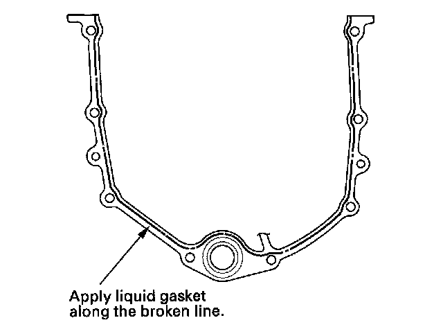

Crankshaft and Piston Installation
Crankshaft and Piston InstallationSpecial Tools Required
^ Driver 07749-0010000
^ Driver attachment, 106 mm 070AD-RCAA200
1. Check the connecting rod bearing clearance with plastigage.
2. Check the main bearing clearance with plastigage.
3. Install the bearing halves in the engine block and connecting rods.
4. Apply new engine oil to the inside of the main bearings and rod bearings.
5. Lower the crankshaft (A) into the engine block.
6. Apply new engine oil to the side with the thrust washer groove. Install the thrust washers (A) in the No. 3 journal.
7. Install the bearings (A) and bearing caps (B) with the arrow (C) facing the timing belt end of the engine.

8. Apply new engine oil to the bolt threads and flanges, then loosely install the bearing cap bolts (D) and bearing cap side bolts (E).
9. Set the crankshaft to bottom dead center (BDC) for the cylinder you are installing the piston in.
10. Apply new engine oil to the piston, inside of the ring compressor, and the cylinder bore.
11. Attach the ring compressor to the piston/connecting rod assembly, and check that the bearing is securely in place.
12. Position the piston/connecting rod assembly with the arrow (A) facing the timing belt side of the engine.
13. Position the piston/connecting rod assembly in the cylinder, and tap it in using the wooden handle of a hammer (A). Maintain downward force on the ring compressor (B) to prevent the rings from expanding before entering the cylinder bore.
14. Stop after the ring compressor pops free, and check the connecting rod-to-crank journal alignment before pushing the piston into place.
15. Measure the diameter of each connecting rod bolt at point A and point B.
16. Calculate the difference in diameter between point A and point B.
Point A-Point B = Difference in Diameter
Difference in Diameter
Specification: 0-0.1 mm (0-0.004 in.)
17. If the difference in diameter is out of tolerance, replace the connecting rod bolt.
18. Line up the mark (A) on the connecting rod and cap, then install the cap.
19. Apply new engine oil to the bolt threads and flanges. Torque the bolts (B) to 20 N-m (2.0 kgf-m, 14 lbf-ft).
20. Mark the connecting rod (A) and bolt head (B) as shown.

21. Tighten the bolt until the mark on the bolt head lines up with the mark on the connecting rod (turn the bolt 90°).
NOTE: Remove the connecting rod bolt if you tightened it beyond the specified angle, and go back to step 15 of the procedure. Do not loosen it back to the specified angle.
22. Tighten the bearing cap bolts, and then the bearing cap side bolts to the specified torque in the sequence as shown. Repeat the torque sequence again to measure the bolts are properly torqued.
NOTE: Apply new engine oil to the bolt threads and flanges.
23. Apply a light coat of multipurpose grease to the crankshaft and to the lip of the seal.
24. Drive the new crankshaft oil seal until the driver attachment bottoms on the engine block end cover.
25. Remove all of the old liquid gasket from the engine block end cover mating surfaces, bolts, and bolt holes.
26. Clean and dry the engine block end cover mating surfaces.
27. Apply liquid gasket, P/N 08717-0004, 08718-0001, 08718-0003, or 08718-0009, evenly to the engine block mating surface of the engine block end cover. Install the component within 5 minutes of applying the liquid gasket.
NOTE:
^ If you apply liquid gasket P/N 08718-0012, the component must be installed within 4 minutes.
^ If too much time has passed after applying the liquid gasket, remove the old liquid gasket and residue, then reapply new liquid gasket.

28. Install the dowel pins (A), new O-ring (B), and the engine block end cover (C) on the engine block.
29. Clean the excess grease off the crankshaft, and check the seal for distortion.
30. Install a new crankshaft oil seal in the oil pump.
31. Remove all of the old liquid gasket from the oil pump mating surfaces, bolts, and bolt holes.
32. Clean and dry the oil pump mating surfaces.
33. Apply liquid gasket, P/N 08717-0004, 08718-0001, 08718-0003, or 08718-0009, evenly to the engine block mating surface of the oil pump. Install the component within 5 minutes of applying the liquid gasket.
NOTE:
^ If you apply liquid gasket P/N 08718-0012, the component must be installed within 4 minutes.
^ If too much time has passed after applying the liquid gasket, remove the old liquid gasket and residue, then reapply new liquid gasket.

34. Grease the lip of the oil seal, and apply oil to the new O-ring (A).

35. Install the dowel pins (B), then align the inner rotor with the crankshaft, and install the oil pump (C).
36. Clean the excess grease off the crankshaft, and check the seat for distortion.
37. Install the baffle plate (D), then install the oil screen (E) with new O-ring (F).
38. Install the rocker arm oil control solenoid/oil filter assembly (A), with a new rocker arm oil control solenoid filter (B).
39. Install the oil pan.
40. Install the crankshaft position (CKP) sensor.
41. Install the cylinder heads.
42. Install the drive plate.
43. Install the transmission.
44. Install the engine assembly.
NOTE: When any crankshaft or connecting rod bearing is replaced, after assembly it is necessary to run the engine at idling speed until it reaches normal operating temperature, then continue to run it for about 15 minutes.